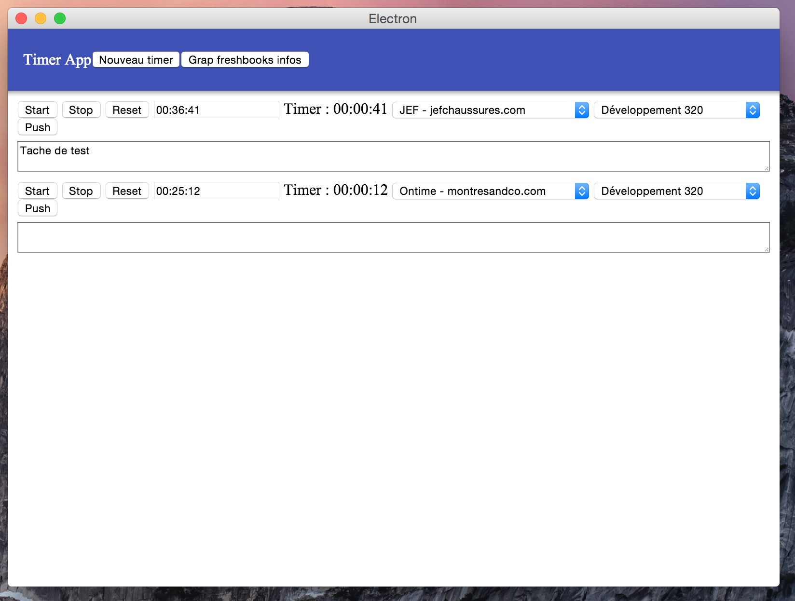

Read me

Trello Board
Feel free to vote ;)
Pull request are welcome.
Please open an issue if you find a bug.
Installation Step
Install project
```
npm install
bower install
./node_modules/.bin/electron-rebuild
```
Give your Freshbooks credentials
Your Freshbooks credentials have to be in freshbooks_data/credentials.json
```
mkdir freshbooks_data
cd freshbooks_data
touch credentials.json
```
In your credential file put :
```json
{
"api_url": "__YOUR_API_URL__",
"api_token": "__YOUR_API_TOKEN__"
}
```
Grab your Freshbooks data
```
npm start
```
- click the button 'Grab Freshbooks data'
- quit the application (cmd+q)
- npm start
- Hello timer :)